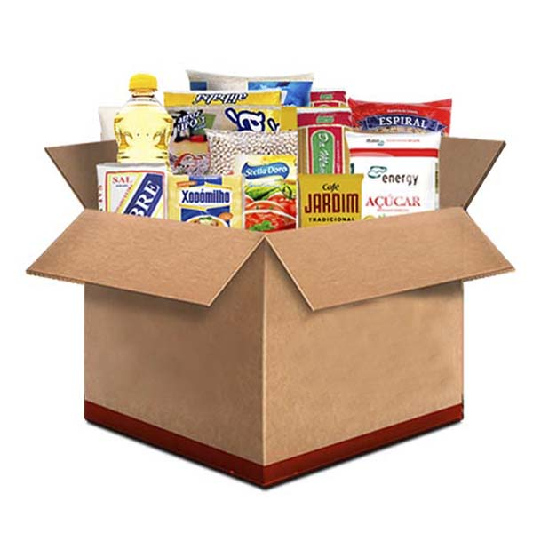
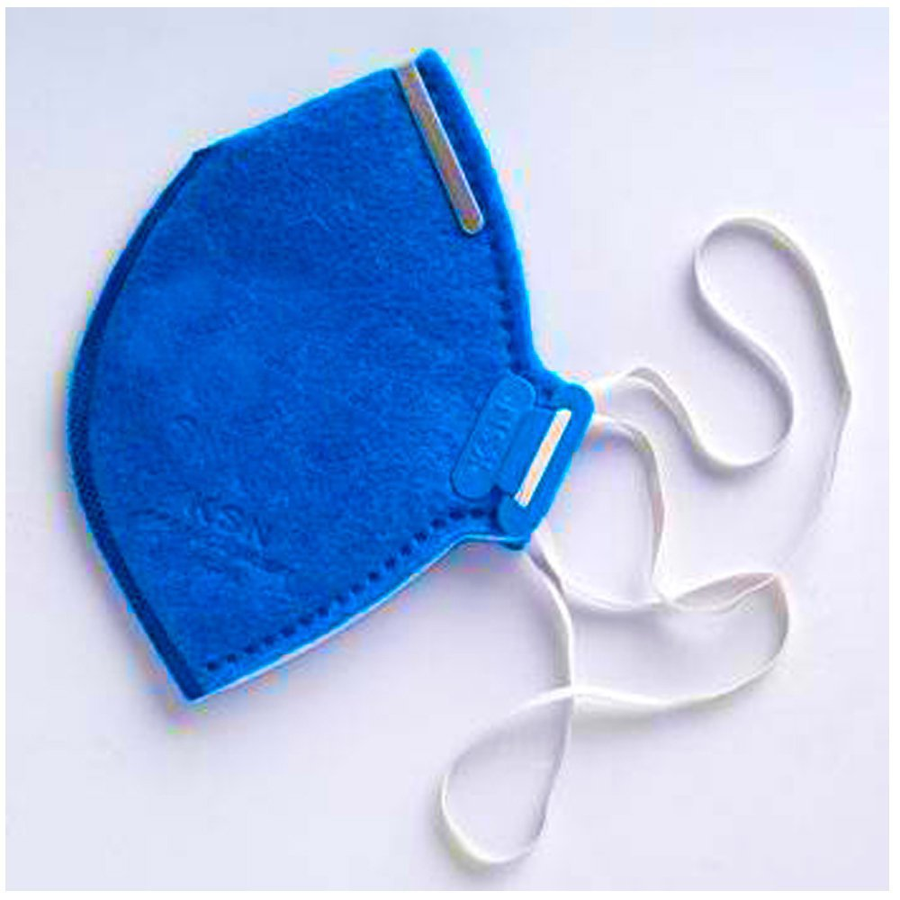
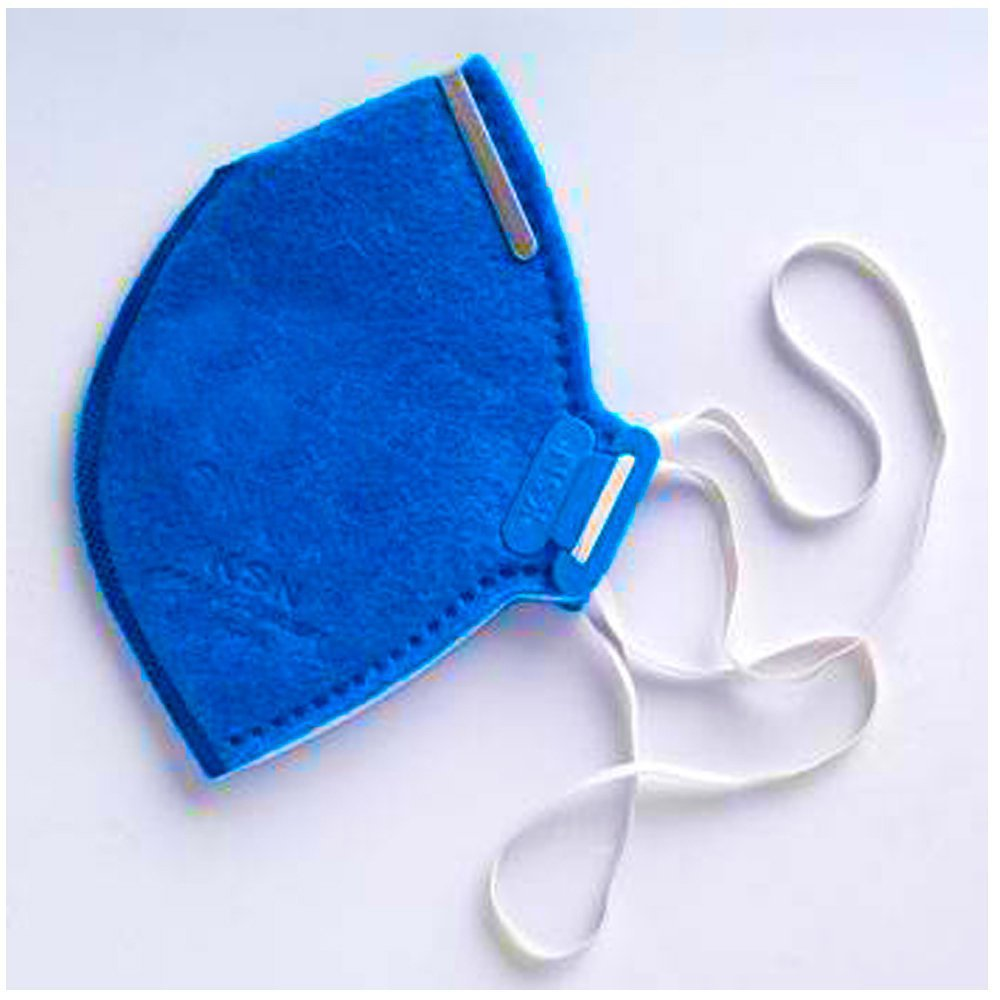

O que sera doado:
- Mascara PFF2 para as criancas e os responsaveis
- Cesta basica 
- Roupas de frio
Motivo para a utilizacao deste mascara se deve a ela prover maior protecao
Como utilizar:

O que sera doado:
Motivo para a utilizacao deste mascara se deve a ela prover maior protecao
